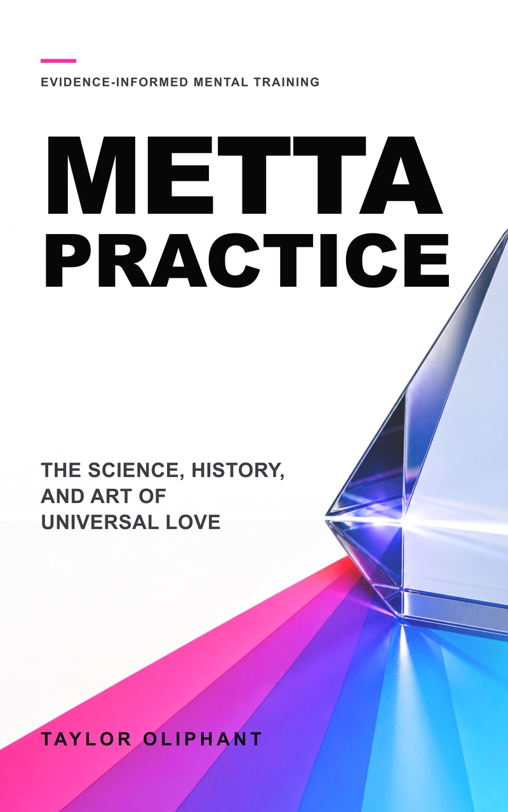

Feel less overwhelmed.
Workplace studies of loving-kindness and compassion programs report lower stress and burnout. Anxiety trials point in the same direction, with effects varying by program and comparison group.
See the evidence →Loving-kindness, taught properly
Metta is a trainable mental practice for feeling better, staying steadier, and relating with more care. Learn the complete method in one evening. Use it for life.
Complete HTML, PDF, EPUB, and audiobook · no checkout · no email required

Why people practice
Pressure, overthinking, self-criticism, conflict, and exhaustion all train the mind in directions you did not choose. Metta trains capacities that make ordinary life easier to meet.
Workplace studies of loving-kindness and compassion programs report lower stress and burnout. Anxiety trials point in the same direction, with effects varying by program and comparison group.
See the evidence →Randomized studies report more positive emotion and less negative emotion. In working adults, those gains grew over time instead of disappearing after the first session.
See the evidence →Metta trains care precisely where shame, threat, and self-attack usually take over. Trials report less self-criticism and greater self-compassion after structured practice.
See the evidence →Brief experiments increase immediate social connection. Longer programs have reported gains in social support, empathy, interpersonal mindfulness, and collaboration.
See the evidence →In a randomized field study, increases in positive emotion predicted growth in mindfulness, purpose, social support, life satisfaction, and other personal resources.
See the evidence →A 100-person workplace trial reported better collaboration, affective stability, and workplace well-being—three ingredients of effective work under pressure.
See the evidence →How it works
Stress rehearses threat. Resentment rehearses the argument. Self-criticism rehearses the attack. Metta deliberately rehearses care—until a better response is more available under pressure.
One brief exercise increased positive feeling and connection toward strangers. Across 23 randomized studies, loving-kindness programs also improved emotional and psychological outcomes compared with passive controls.
See the 23-study synthesis →In a randomized field experiment with working adults, daily positive emotion increased over time. Those gains predicted growth in mindfulness, purpose, social support, and life satisfaction.
See the randomized field study →A 100-person workplace trial reported better interpersonal mindfulness, empathy, collaboration, affective states, and workplace well-being. The goal is not a five-minute mood. It is more access to care during work, conflict, ambition, parenting, and self-criticism.
See the workplace trial →“Rehearse the feeling you want—until it becomes who you are.”
The book shows you how to move metta off the cushion and into the ordinary moments that shape a life.
Read the science chapter →The science
The research is not perfect, and it is no longer trivial. Loving-kindness has been tested in randomized experiments, workplaces, clinical populations, and meta-analyses.
2024 systematic review and meta-analysis
23 randomized studiesBenefits in positive and negative emotion, compassion, mindfulness, and psychological symptoms compared with passive controls.
Petrovic et al. →Randomized field study
Working adultsDaily positive emotion increased over time and predicted growth in purpose, mindfulness, social support, and life satisfaction.
Fredrickson et al. →Randomized clinical program
Self-critical adultsLess self-criticism and more self-compassion after loving-kindness training in a small waitlist-controlled trial.
Shahar et al. →Emerging workplace RCT
100 professionalsA short app-guided program reported improvements in affect, empathy, interpersonal mindfulness, collaboration, and workplace well-being.
Gan et al. →Studies measure average responses to structured exercises and programs—not a guaranteed response to reading a book. Effects vary, and comparisons with active alternatives are less decisive.
Read the full evidence review →A word from the author’s wife
Alisha offers a fourteen-second case for metta, this book, and the person who wrote it.
Why this book
Originally from the San Francisco Bay Area, Taylor has studied meditation for more than fifteen years. He spent three years living in Nepal, where he deepened his practice and met Alisha.
After practicing many forms of meditation, he kept returning to metta—the practice that has helped him most. This book brings that experience together with the tradition’s history and modern research in one practical guide.
The complete first edition · free
Get the complete book free. No signup or payment required.
Metta Practice · Complete Digital Edition
Free no signup · no payment · files you keep
The audiobook includes the main text, Afterword, and Appendix A. Appendix B and the Notes remain in the text editions.
Complete audiobook · YouTube
Play the complete digitally narrated audiobook here, or open it on YouTube to listen there. The playlist also includes a separate English reading of the Metta Sutta.
Guided meditations
Each collection includes guided metta meditations for one, two, five, and ten minutes. Choose nature visuals or an ambient musical setting, then choose the time you have.
Four guided practices paired with changing natural scenery.
Four guided practices with a spacious ambient musical background.
Questions
Randomized trials and meta-analyses report benefits in mood, self-compassion, anxiety symptoms, stress, burnout, and immediate social connection. Results vary. The book gives you the complete method so you can test the practice directly.
Better emotional regulation, lower stress, and stronger collaboration can reduce the friction that gets in the way of good work. Emerging workplace studies are encouraging, but metta-specific research does not yet justify a universal productivity guarantee.
No. It is educational material and self-guided mental training. It can sit alongside professional care but does not diagnose or treat a condition.
No. The book starts from the beginning and teaches a complete twenty-minute practice, with clear guidance for bringing metta into daily life.
No. The book explains the Buddhist source accurately; the practice requires no religious commitment.
The complete HTML book, EPUB, typeset PDF, digitally narrated audiobook, and both four-video guided meditation collections. Nothing is held back behind a purchase or signup.
No. Read online or download the files directly. Optional support may be added later, but access to the book and practices will remain free.
A better place to return
Learn the whole method tonight. Bring it into the moments that need it tomorrow.